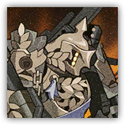

The Last Steam Knight
Melee Ranged Physical; Construct Leader (Machine)

|
 |
The Last Steam Knight. Steam Knights are the glory of Victoria, representing the nation's supreme combat prowess and the highest honor bestowed upon soldiers. The last Steam Knight rises from the dust-laden ruins, charging forward to defend the Victoria he holds in his heart. |
The Last Steam Knight
Huge Construct (Machine), Lawful Neutral
| AC 24 | Initiative +16 (26) |
| HP 337 (25d12+175) | |
| Speed 30 ft. | |
| Mod | Save | Mod | Save | Mod | Save | |||||||||
|---|---|---|---|---|---|---|---|---|---|---|---|---|---|---|
| STR | 24 | +7 | +14 | DEX | 15 | +2 | +2 | CON | 24 | +7 | +14 | |||
| INT | 15 | +2 | +2 | WIS | 18 | +4 | +11 | CHA | 17 | +3 | +3 |
| Resistances Force, Fire |
| Immunities Poison; Blinded, Deafened, Charmed, Frightened, Exhausted, Paralyzed, Petrified, Poisoned, Stunned |
| Senses Blindsight 60 ft., Darkvision 120 ft., passive Perception 14 |
| Languages Common, Victorian |
| CR 22 (41,000 XP, or Mythic 82,000; PB +7) |
Traits
Boss Resistance (3/Day). When the Steam Knight fails a saving throw, he can expend 50 HP to instead succeed. Additionally, the Steam Knight can take Legendary Action and expend a use of Boss Resistance to regain 50 HP.5
Glory Awakening (Mythic Trait; Recharges on Long Rest). While the Steam Knight's HP is reduced to 0, he doesn't die. At the start of his next turn, his HP resets to 337, AC resets to 18, and recharge Unto My Last Breath. Additionally, the Steam Knight can use the options in the "Mystic Actions" section for 1 hour.
Stable Chassis. When resisting effects that cause the Prone condition or forced movement, the Steam Knight's size is treated as one size larger, and he has Advantage on the saving throw.
Actions
Multiattack. The Last Steam Knight makes three attacks using either Steamblade or Cannonade.
Steamblade. Melee Weapon Attack: +14 to hit, reach 10 ft. Hit: 21 (4d6+7) slashing damage plus 14 (4d6) fire damage. If the target is Large or smaller, it is also knocked Prone.
Cannonade. Ranged Weapon Attack: +14 to hit, range 120 ft. Hit: 26 (4d12) fire damage, and other creatures within 15 ft. of the target take 10 fire damage.
Defensive Furious Strike. Constitution Saving Throw: DC 22, one target the Steam Knight chooses within 5 ft. Failure: 106 (22d8+7) bludgeoning damage and Stunned until the end of its turn. Success: Half damage only. Failure or Success: This action can't be used again until the Steam Knight has performed a Multiattack.
Unto My Last Breath (Recharge 5-6).
The Last Steam Knight makes two Steamblade attacks, then activates the propulsion system. All creatures within 5 ft. of the Steam Knight's Emanation immediately take 26 (4d12) fire damage. Until the end of this turn, the Steam Knight gains a flying speed of 120 ft. and attempts to ascend or move at that speed. When the Steam Knight is at a high altitude, he hovers in place and slowly descends at the start of his next turn, and creatures within 5 ft. of his Emanation upon landing take another 26 (4d12) fire damage.
Legendary Actions
Legendary Actions: 3. The Steam Knight can take one of the following actions immediately after another creature's turn. He regains all Legendary Actions at the start of his turn.
Instant Cannonade. The Steam Knight immediately makes one Cannonade attack.
Pneumatic Pressurization. The Steam Knight can immediately move up to 30 ft., then makes one Steamblade attack.
Mystic Actions
If the Steam Knight's Glory Awakening trait is activated, he can choose from the following options as Legendary Actions.
Cannonade Array (Requires at least 60 ft. altitude). The Steam Knight designates a point within 120 ft. and fires a bombardment salvo at it. Dexterity Saving Throw: DC 20, each creature in a 20-ft. Cube originating from that point. Failure: 39 (6d12) fire damage and Prone. Success: Half damage only.
Steam Nozzle (Requires at least 60 ft. altitude). The Steam Knight immediately flies horizontally up to 60 ft., then makes one Cannonade attack.